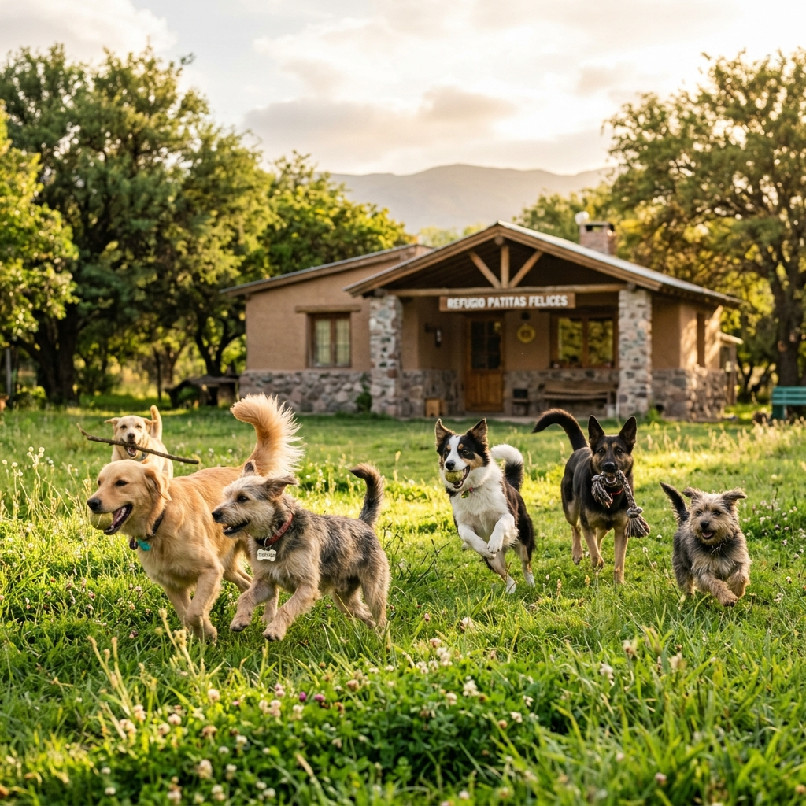

Nuestra historia, compromiso ético y la labor diaria que sostenemos junto a la comunidad de Gálvez.
La **Reserva Canina de Gálvez** nació de la necesidad urgente de dar un espacio digno y seguro a decenas de perros abandonados, heridos o víctimas de maltrato en nuestra ciudad.
No funcionamos simplemente como un albergue temporal: acondicionamos caniles de descanso, áreas de esparcimiento verde, controles sanitarios estrictos, campañas de vacunación y promovemos la adopción consciente.
Erradicar el abandono animal y lograr la superpoblación cero en Gálvez a través de la castración masiva y la adopción.
Construir una comunidad donde cada animal sea respetado, protegido y viva en una familia responsable.

Aclaramos las dudas más habituales de vecinos y colaboradores.
¡Sí! Coordinamos visitas los fines de semana para que vecinos y familias puedan pasear perritos, colaborar en las rutinas de higiene o conocer a su futuro integrante de familia.
Ser mayor de edad, contar con patio o espacio seguro cerrado en la vivienda, asumir el compromiso de vacunación y control veterinario anual, y firmar el contrato de adopción responsable.
La Reserva se sostiene mediante la solidaridad de los vecinos de Gálvez: donaciones mensuales vía alias/Mercado Pago, rifas benéficas y colectas de alimento balanceado.